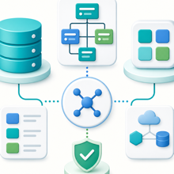

Reglas estructurales, validaciones e invariantes tecnicas para sostener la Red de Redes de Saldify.
1. Proposito
Este documento describe especificamente el modelo de red de Saldify, la relacion entre Anfitrion e Invitado, las combinaciones permitidas actualmente y el cambio pendiente para trasladar una red completa cuando un usuario acepta la invitacion de un Anfitrion diferente.
El objetivo es dejar claramente separado:
- lo que permite el modelo de datos;
- lo que Flutter ya realiza;
- lo que permite actualmente el procedimiento de validacion;
- lo que falta modificar en base de datos;
- las validaciones necesarias para evitar ciclos y relaciones duplicadas.
Este documento debe leerse junto con:
ARCHITECTURE_RED_INVITACIONES_CATALOGO.md;ARCHITECTURE_RESUMEN_02.md;ARCHITECTURE_RESUMEN_03.md;ARCHITECTURE_CLIENTE.md.
2. Concepto principal: una red de redes
Saldify permite que una misma persona o empresa participe con dos roles:
- Anfitrion de sus propios clientes;
- Invitado o cliente de otro Anfitrion.
Los roles no crean identidades diferentes. El usuario conserva una sola identidad y su papel depende de las relaciones comerciales en las que participa.
Ejemplo:
Z
└── A
├── B
└── CEn este ejemplo:
- Z es Anfitrion de A.
- A es Invitado de Z.
- A tambien es Anfitrion de B y C.
- B y C son Invitados directos de A.
Por eso A puede entrar a Saldify como Invitado para consultar su relacion con Z y tambien como Anfitrion para administrar su propia red.
3. Identidad y relacion comercial
3.1 Identidad unica
La identidad principal vive en:
SYSUSER10_CAB_MOVILUn usuario no debe duplicarse por:
- cambiar entre Anfitrion e Invitado;
- crear su propia red;
- integrarse a la red de otro Anfitrion;
- trasladar su red a un nuevo Anfitrion.
Google autentica la identidad, pero no determina el rol comercial.
3.2 Relacion entre Anfitrion e Invitado
La relacion comercial vive en:
SYSUSER11_DET_CONTACTOSCampos estructurales principales:
RELA_SYSUSER10 = usuario Invitado o cliente
RELA_SYSUSER10_ANFITRION = Anfitrion directo
ID_SYSUSER11 = identificador de la relacion
SYSUSER11_STATUS = estado comercial
SYSUSER11_STATUS_ACCION = responsable de administrar los datosLa relacion se interpreta como una arista del arbol:
RELA_SYSUSER10_ANFITRION -> RELA_SYSUSER10Un usuario que solamente actua como Anfitrion raiz puede tener clientes debajo sin tener una fila propia como Invitado en SYSUSER11.
4. Regla estructural: un solo padre directo
Cada usuario puede tener como maximo un Anfitrion directo. La base lo protege con la restriccion unica sobre:
SYSUSER11_DET_CONTACTOS.RELA_SYSUSER10Esta regla garantiza que:
- un cliente no pertenezca simultaneamente a dos Anfitriones;
- una aceptacion de invitacion no duplique al usuario;
- un traslado de red cambie el padre, no copie el arbol;
- cada recorrido ascendente tenga una sola ruta;
- la red pueda representarse como un arbol.
5. Red propia y operacion standalone
Un Anfitrion puede trabajar de forma independiente o standalone.
Puede:
- crear clientes manualmente;
- invitar clientes que aun no participan en Saldify;
- asignar credito;
- registrar o revisar compras;
- registrar o confirmar pagos;
- ofrecer su catalogo;
- controlar productos e inventario;
- consultar cobranza, saldos e historial.
Ejemplo de red de un nivel:
A
├── B
├── C
└── DA es Anfitrion raiz. B, C y D son sus clientes directos.
6. Un Invitado puede convertirse en Anfitrion
Un cliente puede crear o administrar su propia red sin dejar de ser Invitado de su Anfitrion superior.
Ejemplo:
A
└── B
├── C
└── DB cumple ambos roles:
- es Invitado de A;
- es Anfitrion de C y D.
A puede consultar la red descendente de B desde Mi red de Venta. Esa consulta es recursiva y permite visualizar los siguientes niveles. Ver los descendientes no convierte a C y D en clientes directos de A. B conserva la administracion directa de sus propios clientes.
7. Integracion actual entre Anfitriones raiz
Actualmente se permite que un Anfitrion raiz acepte la invitacion de otro Anfitrion raiz.
Situacion inicial:
A
├── B
└── C
Z
├── X
└── YSi Z invita a A y A acepta, A todavia no tiene un padre directo. La base crea solamente la relacion:
Z -> AEl resultado es:
Z
├── X
├── Y
└── A
├── B
└── CB y C no se copian, no se reinvitan y no cambian de padre. Permanecen debajo de A. Por eso toda la red de A queda integrada naturalmente debajo de Z.
8. Combinaciones de red
8.1 Anfitrion invita a un usuario sin red y sin padre
Se crea una relacion directa nueva.
Antes:
A B
Despues:
A
└── B8.2 Anfitrion raiz invita a otro Anfitrion raiz
Se integra el segundo Anfitrion con toda su red.
Antes:
A B
├── C
└── D
Despues:
A
└── B
├── C
└── DEste comportamiento ya es compatible con el procedimiento actual porque B no tiene otro padre directo.
8.3 Cliente-Anfitrion invita a un Anfitrion raiz independiente
Tambien es estructuralmente valido.
Antes:
A
└── B
M
├── N
└── P
Despues de que B invita a M:
A
└── B
└── M
├── N
└── PM deja de ser raiz, se convierte en Invitado de B y conserva su red.
8.4 Anfitrion invita a un nodo interno de otra red
Esta es la combinacion que falta habilitar.
Situacion inicial:
A
└── B
├── C
└── D
XX invita a B. Si B acepta y X no pertenece al subarbol de B, el resultado deseado es:
A
X
└── B
├── C
└── DA pierde a B y toda la rama encabezada por B. B conserva a C y D.
La operacion no mueve individualmente a C y D. Solo cambia el padre directo de B. El subarbol se traslada completo porque sus relaciones internas permanecen intactas.
8.5 Nodo de una red invita a un nodo de otra red independiente
Ejemplo:
A
├── B
├── C
└── D
R
└── Y
├── M
├── N
└── PD invita a Y. Si Y acepta y D no pertenece al subarbol de Y, el resultado deseado es:
A
├── B
├── C
└── D
└── Y
├── M
├── N
└── P
RR pierde la rama de Y. Y pasa a depender de D y conserva M, N y P.
8.6 Un descendiente invita a uno de sus ancestros
Debe rechazarse porque generaria un ciclo.
A
└── B
└── CSi C invita a A, el resultado propuesto seria:
C -> A -> B -> CEse ciclo produciria recorridos infinitos y una red invalida. La invitacion no debe consolidarse.
8.7 Usuario utiliza su propia invitacion
Debe rechazarse siempre.
A -> AUna relacion consigo mismo no representa una vinculacion comercial valida.
8.8 Invitacion del mismo Anfitrion actual
Si el usuario ya pertenece al mismo Anfitrion, la relacion puede consolidarse sin crear otra fila. El procedimiento puede actualizar estado y responsable de datos conforme a las reglas actuales.
8.9 Relacion archivada
Una relacion archivada no debe reactivarse silenciosamente. La politica de reactivacion debe mantenerse explicita y separada del traslado normal de red.
9. Comportamiento actual por seguridad
En el estado actual, ADD_SYSUSER10_SYSUSER11 permite:
- crear una relacion cuando el Invitado no tiene padre;
- integrar un Anfitrion raiz debajo de otro Anfitrion;
- conservar automaticamente todos los descendientes del Anfitrion integrado;
- consolidar una relacion con el mismo Anfitrion;
- rechazar auto invitaciones;
- rechazar ciclos cuando se crea una relacion nueva;
- impedir que un usuario tenga dos padres directos.
Por seguridad, actualmente no permite que un usuario que ya pertenece a un Anfitrion diferente cambie de red mediante una invitacion.
La validacion actual devuelve un mensaje cuando:
el Invitado ya tiene relacion
y su Anfitrion actual es diferente del Anfitrion que invitaEn ese caso:
- la invitacion no traslada al usuario;
- el padre anterior permanece igual;
- la red descendente no cambia;
- no se crea una segunda relacion.
Por lo tanto, en esta etapa solo los Anfitriones raiz, es decir, usuarios sin padre directo, pueden integrarse a otra red conservando su subarbol.
10. Cambio pendiente en el procedimiento de validacion
Debe modificarse el procedimiento:
ADD_SYSUSER10_SYSUSER11El objetivo pendiente es permitir que un usuario que ya pertenece a otra red pueda aceptar la invitacion de un nuevo Anfitrion y trasladarse junto con toda su red descendente.
Flutter ya ejecuta este procedimiento despues de validar la invitacion. No se requiere duplicar el flujo en Flutter ni crear otra identidad.
10.1 Regla pendiente
Cuando el Invitado ya tiene un Anfitrion diferente:
- Recuperar la relacion actual del Invitado.
- Identificar el nuevo Anfitrion que genero la invitacion.
- Rechazar si ambos usuarios son el mismo.
- Comprobar que el nuevo Anfitrion no pertenece al subarbol del Invitado.
- Rechazar si el traslado produce un ciclo.
- Aplicar las reglas de relaciones archivadas.
- Actualizar el padre directo de la relacion existente.
- Conservar el mismo usuario y el mismo subarbol.
- Regresar a Flutter el contrato normal con
MENSAJE = 'OK'.
La operacion estructural esperada es conceptualmente:
UPDATE SYSUSER11_DET_CONTACTOS
SET RELA_SYSUSER10_ANFITRION = :V_ID_ANFITRION,
SYSUSER11_STATUS = 1,
SYSUSER11_STATUS_ACCION = 'I'
WHERE ID_SYSUSER11 = :V_ID_RELACION;Este SQL es una referencia de arquitectura. La implementacion final debe integrarse en el procedimiento con validaciones, manejo de estados y resultado transaccional.
10.2 No insertar una segunda relacion
Si el Invitado ya tiene una fila en SYSUSER11, no debe insertarse otra. La restriccion unica sobre RELA_SYSUSER10 lo impide y protege la regla de un solo padre.
El cambio correcto es actualizar el Anfitrion de la relacion existente.
10.3 Traslado automatico del subarbol
No se actualizan los descendientes.
Ejemplo:
A -> B -> C
B -> DAl cambiar solamente el padre de B hacia X:
X -> B -> C
B -> DC y D siguen apuntando a B. Por eso la red completa se traslada sin copiar ni reescribir cada nivel.
11. Validacion de ciclos
Antes de cambiar el padre de un usuario se debe comprobar que el nuevo Anfitrion no sea descendiente del usuario que se mueve.
Regla:
No se puede mover B debajo de X si X ya esta dentro del subarbol de B.Una forma de validarlo es recorrer la ascendencia del nuevo Anfitrion hasta la raiz. Si durante el recorrido aparece el usuario que se intenta mover, la operacion debe rechazarse.
La validacion debe ejecutarse tanto para:
- relaciones nuevas;
- cambios de padre;
- Anfitriones con red propia;
- clientes sin descendientes.
12. Responsabilidad de Flutter
El flujo actual de Flutter ya contiene las piezas necesarias:
Link o codigo de invitacion
-> autenticacion
-> UPDATE_SYSUSER90
-> contexto del Invitado
-> ADD_SYSUSER10_SYSUSER11
-> resultado de la relacion
-> dashboard del InvitadoUPDATE_SYSUSER90 valida o reclama el codigo y determina el Anfitrion de la invitacion.
ADD_SYSUSER10_SYSUSER11 consolida la relacion comercial. El cambio pendiente pertenece a este procedimiento, porque la base debe proteger la estructura del arbol de forma transaccional.
Mientras el procedimiento conserve el contrato actual, Flutter puede continuar sin cambios:
MENSAJE
RELA_SYSUSER10
ID_SYSUSER11
SYSUSER10_NOMBRES
SYSUSER10_APELLIDOS
SYSUSER10_TELEFONO
SYSUSER10_CORREO
SYSUSER11_STATUS
CON_CATALOGO
SYSUSER11_FAPLMENSAJE = 'OK' permite continuar al dashboard. Cualquier otro mensaje se muestra como estado o validacion de la invitacion.
13. Efectos del traslado
Cuando un usuario cambia de red:
- el Anfitrion anterior pierde a ese cliente;
- tambien deja de visualizar la rama descendiente encabezada por el cliente;
- el nuevo Anfitrion recibe al cliente y visualiza su subarbol;
- el usuario trasladado conserva sus clientes;
- los descendientes conservan su Anfitrion directo;
- no se duplican identidades;
- no se duplican relaciones;
- la consulta
QRY_SYSUSER11_MI_REDrefleja la nueva estructura
automaticamente.
Tambien deben refrescarse o recalcularse los datos derivados de la estructura:
- metricas del Anfitrion anterior;
- metricas del nuevo Anfitrion;
- catalogo heredado y propietario efectivo;
- permisos o vistas dependientes de la red;
- indicadores de clientes y acciones pendientes.
14. Datos comerciales asociados a la relacion
El traslado conserva la misma identidad y el mismo ID_SYSUSER11. Por eso el usuario trasladado mantiene toda la informacion asociada a su relacion:
- configuracion de credito;
- cuentas, saldos y disponible;
- compras, pagos y sus estados;
- historial completo;
- fechas de corte y demas configuracion comercial.
Nada se borra, reinicia, copia ni vuelve a crear. Solamente cambia RELA_SYSUSER10_ANFITRION en la relacion existente.
La condicion de saldo cero y ausencia de gestiones abiertas determina si el cambio puede realizarse en ese momento. No elimina ni reinicia informacion. Una vez realizado el traslado, todos los datos y estados permanecen con el usuario que cambia de Anfitrion.
Los saldos y operaciones de los descendientes no bloquean el traslado. Esas relaciones pertenecen al usuario que encabeza el subarbol y viajan con su red. Solo debe estar limpia la relacion directa entre el usuario trasladado y su Anfitrion actual.
15. Invariantes obligatorios
Toda alta, consolidacion o traslado debe garantizar:
- El Anfitrion existe.
- El Invitado existe y corresponde a la identidad autenticada.
- Anfitrion e Invitado no son el mismo usuario.
- Cada Invitado tiene como maximo un padre directo.
- No se crea una segunda fila para trasladar una relacion existente.
- El nuevo Anfitrion no pertenece al subarbol del Invitado.
- La operacion no genera ciclos.
- Los descendientes no se duplican ni se reinvitan.
- Una relacion archivada no se reactiva silenciosamente.
- La operacion completa es transaccional.
- El procedimiento devuelve un mensaje util y no deja cambios parciales.
16. Casos de aceptacion para el cambio pendiente
Antes de habilitar el traslado entre redes deben verificarse al menos estos casos:
Caso 1: usuario nuevo
- El Invitado no tiene padre.
- Se crea la relacion con el Anfitrion que invita.
- Resultado:
OK.
Caso 2: Anfitrion raiz con descendientes
- El Invitado no tiene padre y tiene clientes.
- Se crea la relacion con el nuevo Anfitrion.
- Sus clientes permanecen debajo.
- Resultado:
OK.
Caso 3: usuario ya vinculado al mismo Anfitrion
- Se reutiliza la relacion.
- No se inserta otra fila.
- Resultado:
OKconforme a estado.
Caso 4: nodo interno cambia a una red independiente
- El Invitado tiene otro padre.
- El nuevo Anfitrion no pertenece a su subarbol.
- La relacion directa tiene saldo igual a cero.
- No existen compras, pagos ni gestiones pendientes.
- Se actualiza el padre directo automaticamente.
- El Anfitrion anterior pierde la rama.
- El nuevo Anfitrion recibe la rama completa.
- El usuario conserva cuentas, credito, compras, pagos, estados e historial.
- Resultado:
OK.
Caso 4A: nodo interno con saldo pendiente
- No se modifica la relacion.
- Debe liquidar el saldo antes de cambiar de Anfitrion.
Caso 4B: nodo interno con gestiones pendientes
- Existe una compra solicitada o pendiente, un pago sin confirmar u otra
- No se modifica la relacion.
- Debe resolver sus operaciones antes de cambiar de Anfitrion.
gestion abierta.
Caso 5: traslado que produce ciclo
- El nuevo Anfitrion pertenece al subarbol del Invitado.
- No se modifica la relacion.
- Se devuelve un mensaje de ciclo.
Caso 6: auto invitacion
- Anfitrion e Invitado son el mismo usuario.
- No se modifica la relacion.
- Se devuelve un mensaje de validacion.
Caso 7: relacion archivada
- No se reactiva automaticamente.
- Se aplica la politica explicita de reactivacion.
Caso 8: error durante el traslado
- La transaccion se revierte completa.
- El usuario conserva su padre anterior.
- No quedan cambios parciales.
17. Estado de implementacion
Implementado actualmente
- Identidad unica por usuario.
- Roles de Anfitrion e Invitado sobre la misma identidad.
- Red de multiples niveles.
- Un solo padre directo por cliente.
- Anfitrion raiz que se integra debajo de otro Anfitrion.
- Conservacion automatica del subarbol del Anfitrion raiz integrado.
- Visualizacion recursiva mediante
Mi red de Venta. - Validacion de auto invitacion.
- Validacion de ciclos para relaciones nuevas.
- Rechazo de una segunda relacion directa.
Acciones rapidas: Mi red y Reportes
El dashboard del Anfitrion incluye dos accesos operativos adicionales que deben considerarse en arquitectura y soporte:
Mi red: abreSmxSaldiFyMiRedusando el usuario activo del Anfitrion conectado.Reportes: abreSmxSaldiFyReportespara consultar ventas o cobros por rango de fechas.
Mi red usa QRY_SYSUSER11_MI_RED(idRaiz, idActivo). Cuando se abre desde acciones rapidas viaja el idActivo; cuando se abre desde un cliente viaja el idRaiz de la relacion seleccionada.
Reportes usa QRY_SYSUSER10_HISTORIAL_REP(idAnfitrion, desde, hasta, tipo), donde tipo distingue compras para ventas y pagos para cobros. El resultado se muestra como rowset y puede generar PDF operativo.
Estas opciones no deben resolverse con calculos locales de Flutter. La base conserva la responsabilidad de filtrar la red y los movimientos; Flutter presenta el resultado con el patron SmxController, SmxRowSet y pantallas Saldify.
Pendiente
- Modificar
ADD_SYSUSER10_SYSUSER11para permitir el cambio de padre cuando - Aplicar la validacion de ciclo tambien al cambio de padre.
- Validar saldo cero y ausencia de compras, pagos o gestiones pendientes.
- Actualizar automaticamente la relacion existente cuando todo sea correcto.
- Conservar el mismo
ID_SYSUSER11y toda su informacion comercial. - Devolver codigos funcionales estables para cada bloqueo.
- Notificar al Anfitrion anterior despues del traslado.
- Probar el movimiento completo entre redes independientes.
el Invitado ya pertenece a un Anfitrion diferente.
Regla temporal de seguridad
Hasta implementar y validar el cambio pendiente, solamente un Anfitrion raiz sin padre directo puede aceptar la invitacion de otro Anfitrion e integrar toda su red.
Un usuario que ya pertenece a otra red recibe una validacion y permanece con su Anfitrion actual.
18. Traslado automatico condicionado por saldo y gestiones
18.1 Decision funcional
El usuario puede cambiar de red automaticamente cuando haya cerrado sus obligaciones directas con el Anfitrion actual.
La regla es segura, automatica y democratica:
- el Anfitrion anterior queda protegido frente a deudas y operaciones abiertas;
- el usuario sin obligaciones no puede ser retenido arbitrariamente;
- el cambio conserva un solo padre y evita ciclos;
- el usuario trasladado conserva toda su informacion y su subarbol.
18.2 Flujo
Sin Anfitrion actual
-> integrar inmediatamente
Con el mismo Anfitrion
-> consolidar la relacion existente
Con otro Anfitrion y relacion limpia
-> validar ciclo
-> cambiar padre automaticamente
-> trasladar todo el subarbol
Con otro Anfitrion y obligaciones pendientes
-> mantener la red actual
-> devolver el motivo del bloqueo18.3 Condiciones de una relacion limpia
Deben cumplirse todas:
- Saldo directo igual a cero.
- Ninguna compra solicitada.
- Ninguna compra pendiente de entrega.
- Ningun pago pendiente de confirmar.
- Ninguna gestion abierta que pueda modificar el saldo.
- Relacion activa y compatible.
- Ningun traslado concurrente.
Estados actuales de referencia:
SYSUSER40_STATUS
0 = compra solicitada
1 = compra pendiente
2 = compra entregada
SYSUSER50_STATUS
0 = pago pendiente de confirmar
1 = pago confirmado
2 = pago rechazadoUna compra abierta tiene estado 0 o 1. Un pago abierto tiene estado 0.
18.4 Datos que no bloquean
No bloquean el traslado:
- credito aprobado sin utilizar;
- disponible sin consumir;
- compras entregadas;
- pagos confirmados;
- movimientos historicos cerrados;
- clientes y descendientes del usuario;
- saldos entre el usuario trasladado y sus propios clientes.
Solo se valida la relacion directa que se rompe con el Anfitrion anterior.
18.5 Conservacion de cuentas, saldos y movimientos
El usuario cambia de Anfitrion, pero mantiene el mismo ID_SYSUSER11. Por eso conserva:
SYSUSER12_DEP_CLIENTES
SYSUSER40_DET_COMPRAS
SYSUSER50_DET_PAGOS
credito, cuentas, saldos, compras, pagos, estados e historialLa condicion de saldo cero habilita el cambio, pero no borra datos. La operacion estructural modifica solamente el padre directo:
UPDATE SYSUSER11_DET_CONTACTOS
SET RELA_SYSUSER10_ANFITRION = :V_ID_ANFITRION
WHERE ID_SYSUSER11 = :V_ID_RELACION;18.6 Datos existentes para validar
El modelo ya dispone de:
SYSUSER11_DET_CONTACTOS
relacion actual y Anfitrion directo
SYSUSER12_DEP_CLIENTES
credito y configuracion de la relacion
SYSUSER40_DET_COMPRAS
compras y estados
SYSUSER50_DET_PAGOS
pagos y estados
QRY_SYSUSER11_SALDOS
credito, disponible, compras, pagos y balance
QRY_SYSUSER11
novedades de compras y pagosNo hace falta un campo de autorizacion ni una tabla de solicitudes. La elegibilidad puede calcularse al aceptar la invitacion. Puede crearse una consulta auxiliar, pero la validacion definitiva debe ejecutarse dentro de la misma transaccion que cambia el padre.
Contrato auxiliar conceptual:
QRY_SYSUSER11_PUEDE_TRASLADAR(ID_SYSUSER11)
RETURNS
PUEDE_TRASLADAR
SALDO
COMPRAS_PENDIENTES
PAGOS_PENDIENTES
CODIGO_RESULTADO
MENSAJE18.7 Responsabilidad de ADD_SYSUSER10_SYSUSER11
Cuando el Invitado pertenece a otro Anfitrion, el SP debe:
- Recuperar la relacion y el Anfitrion actuales.
- Identificar al nuevo Anfitrion.
- Rechazar auto invitaciones.
- Validar que el nuevo Anfitrion no pertenezca al subarbol del Invitado.
- Calcular el saldo directo.
- Contar compras abiertas.
- Contar pagos pendientes.
- Detectar otras gestiones abiertas.
- Mantener la red actual si existe un bloqueo.
- Cambiar el padre si la relacion esta limpia.
- Conservar usuario,
ID_SYSUSER11, datos y subarbol. - Devolver
MENSAJE = 'OK'. - Ejecutar todo en una sola transaccion.
18.8 Codigos y mensajes
Codigos conceptuales:
OK
SALDO_PENDIENTE
COMPRA_PENDIENTE
PAGO_PENDIENTE
GESTION_PENDIENTE
CICLO_INVALIDO
RELACION_ARCHIVADAMensaje para saldo:
No puedes cambiar de Anfitrion mientras tengas saldo pendiente con tu
Anfitrion actual. Liquida tu saldo y vuelve a aceptar la invitacion.Mensaje para operaciones abiertas:
No puedes cambiar de Anfitrion mientras tengas compras, pagos o gestiones
pendientes. Resuelve tus operaciones y vuelve a aceptar la invitacion.Flutter deberia decidir por un codigo estable, no comparando el texto.
18.9 Resultado del traslado
Antes:
A
└── B
├── C
└── D
X
Despues:
A
X
└── B
├── C
└── DA pierde la rama de B. X recibe la rama completa. B conserva sus clientes y toda su informacion comercial. El Anfitrion anterior no autoriza el cambio, pero puede recibir una notificacion informativa despues de completarse.
18.10 Concurrencia
La validacion y el cambio deben ocurrir en la misma transaccion. Antes del UPDATE se vuelve a comprobar:
- El Invitado sigue con el Anfitrion detectado.
- El saldo continua en cero.
- No aparecieron compras, pagos o gestiones pendientes.
- El nuevo Anfitrion sigue siendo valido.
- No se produce un ciclo.
- No existe otro traslado concurrente.
Las restricciones unicas permanecen como ultima defensa.
18.11 Regla final
Usuario libre de obligaciones
-> cambia de red automaticamente
Usuario con saldo u operaciones abiertas
-> permanece en su red hasta resolverlas
Anfitrion anterior
-> no puede bloquear arbitrariamente el cambio
-> queda protegido frente a obligaciones pendientes
Usuario trasladado
-> conserva cuentas, credito, saldos, compras, pagos e historial
-> conserva todos sus clientes y descendientes19. Resumen final
Saldify ya posee el modelo de datos necesario para una red de redes. Un usuario puede ser Invitado de un Anfitrion y, al mismo tiempo, Anfitrion de sus propios clientes.
El traslado de una red no requiere copiar usuarios ni actualizar todos los descendientes. Solo requiere cambiar el padre directo del usuario que encabeza el subarbol, despues de validar que el nuevo Anfitrion no genere un ciclo.
Actualmente, por seguridad, el procedimiento permite integrar redes solamente cuando el usuario invitado es raiz y no tiene otro padre. Falta modificar ADD_SYSUSER10_SYSUSER11 para que un usuario perteneciente a otra red pueda aceptar la invitacion, cambiar de Anfitrion y conservar todos sus clientes y descendientes.
Flutter ya consume el procedimiento y puede mantener su flujo actual siempre que la base conserve el mismo contrato de salida.